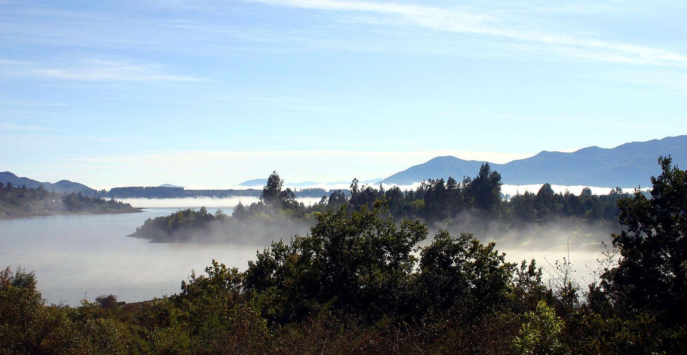
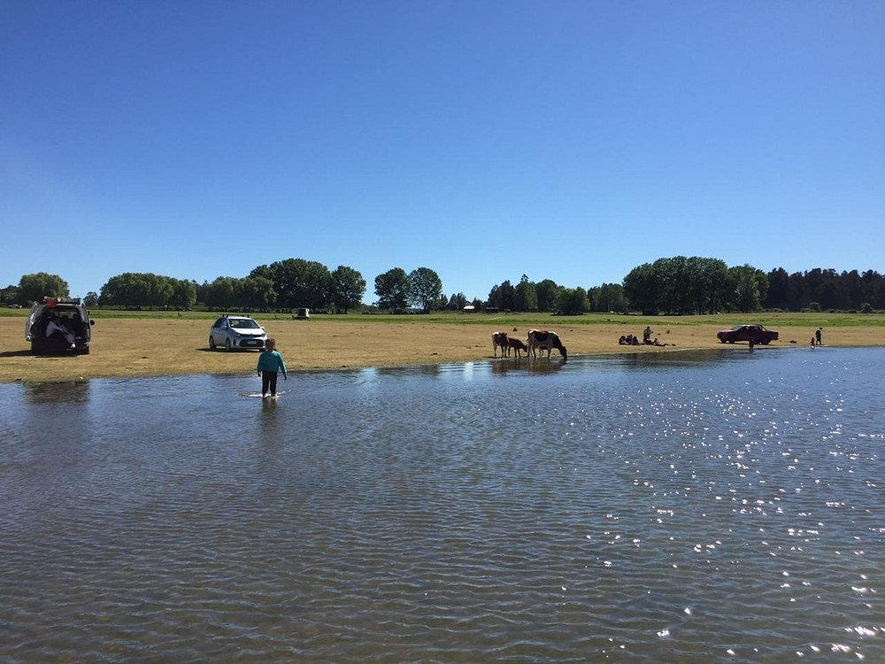
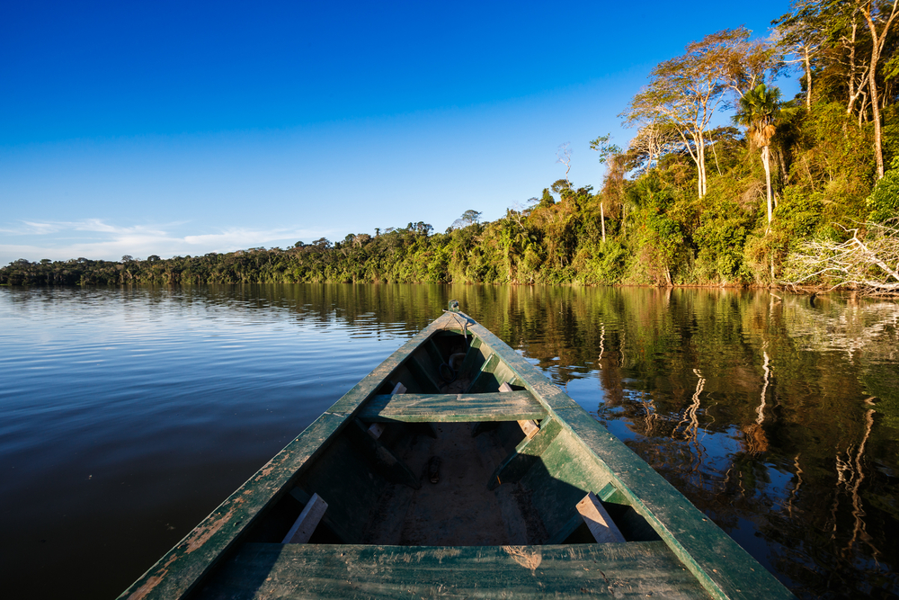

Lago Colbun
Balneareo Colbun.
Balneario Machicura recibió cerca de 16.500 visitantes durante verano 2023
Saber más
Morro de Colbun.
Visite el morro de Colbun, y refresquese con sus aguas
Saber másFerias en Colbún.
Artesania, comida tipica y juegos, los esperan en las diversas ferias de Colbun
Saber másFestival de Colbun 2023.
Revise los horarios y los artistas invitados en el festival de Colbun
Saber másTrilla a yegua suelta.
Horarios y ubicacion de una nueva version de una costumbre chilena
Saber másJeppeo en el lago Colbún.
Venga a pasar un momento en familia en la nueva vercion del jeppeo en Colbun
Saber másCarreras a la Chilena.
Lugar y horarios de las carreras a la chilena que se realizaran en Colbun
Saber másFiesta de la Cerveza en Colbún.
Conosca los horarios y los invitados en la nueva fiesta de la cerveza en Colbun.
Saber másVisite el lago de Colbún
- 
-

-

-

- 
- 
-